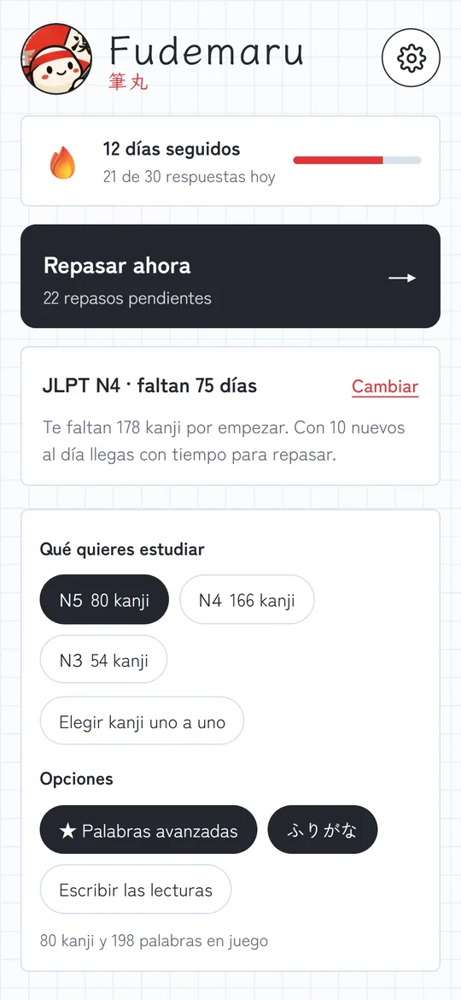
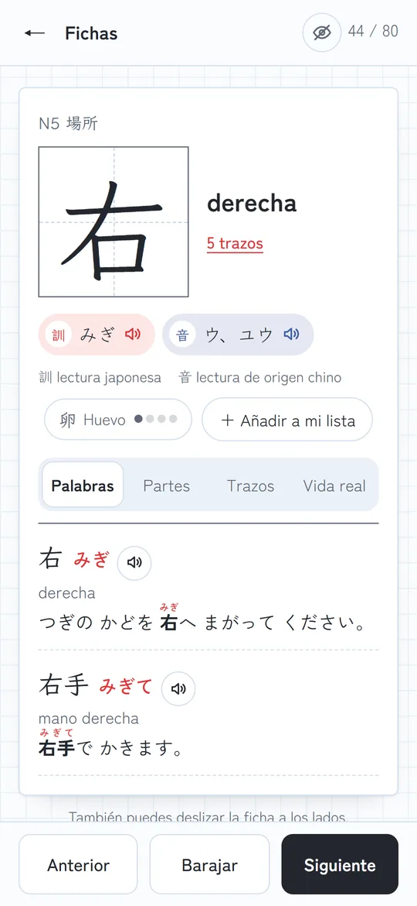
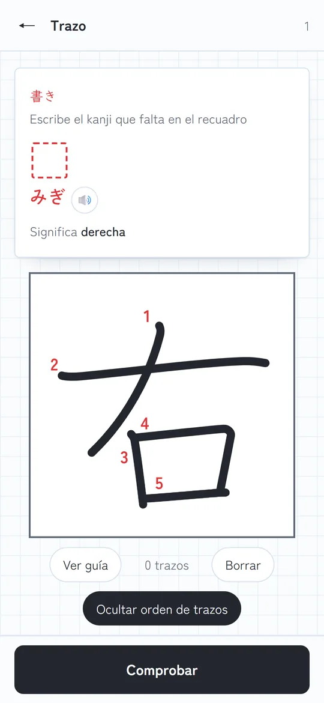
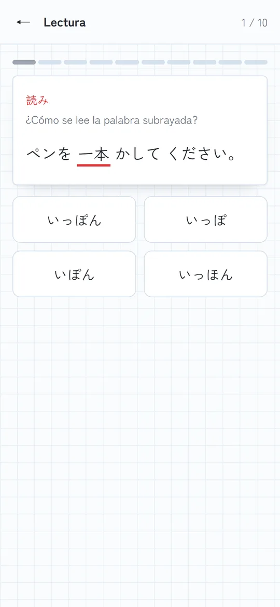
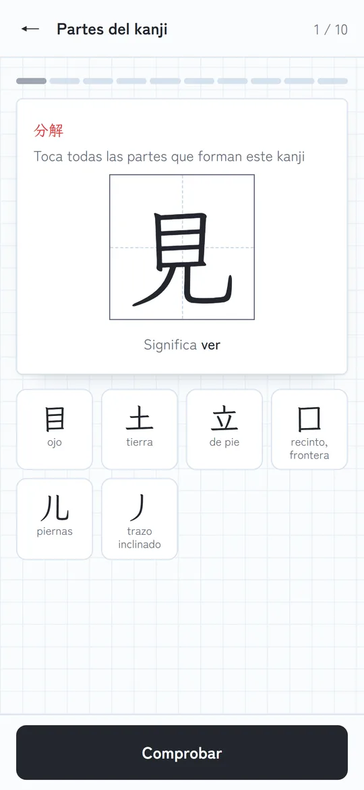
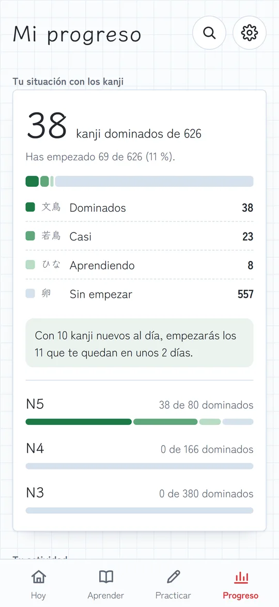

App de kanji para Android · Español e inglés
Aprende kanji de verdad
Fumidori ふみどり te enseña los kanji del N5 al inicio del N3 entendiendo su lógica, escribiéndolos a mano y leyéndolos en frases reales. Gratis, sin anuncios y sin cuentas.


Todo lo que necesitas para los kanji
Cada kanji se aprende entendiéndolo, escribiéndolo y usándolo, no solo memorizándolo.
Fichas completas
Significado, lecturas, partes y radical, un truco para recordarlo y palabras con frases y furigana.
Orden de trazos animado
Cada kanji se dibuja trazo a trazo y numerado, con los datos de KanjiVG.
Escritura a mano corregida
Dibuja con el dedo y la app compara tu kanji con el modelo.
Aprende con lógica
Rompe cada kanji en sus piezas y entrena los que se confunden: 休 y 体, 右 y 左.
Repaso inteligente
Cada palabra vuelve justo antes de olvidarla, con topes diarios para no agobiarte.
Kanji de la vida real
En cada ficha, dónde lo verás: en la estación, en el konbini, en un menú o en la calle.
Un plan para tu objetivo
Dinos para qué estudias y Fumidori decide qué kanji van primero y a qué ritmo.
Por gusto
Avanzas por niveles a tu ritmo y te avisa cuando toca el siguiente.
Para el JLPT
Calcula cuántos kanji nuevos al día necesitas para llegar al examen.
En una escuela
Marcas los kanji que ves en clase, o pegas la lista de tu profesor, y salen primero.
Para vivir en Japón
Primero los kanji de carteles, estaciones, tiendas y menús.
Así es Fumidori




Para escuelas de japonés
Fumidori acompaña a tus alumnos fuera de clase, con los kanji que tú decidas.
- El alumno elige «Estudio en una escuela de japonés»y el nivel de su clase. La app le prepara el plan.
- El profesor crea una lista con los kanji de la semanaen la propia app y la comparte por LINE, WhatsApp o correo.
- El alumno pega el mensajey esos kanji salen primero en sus prácticas y repasos.
- El alumno puede crear una imagen con su progreso(racha, niveles y kanji de clase) y enviársela al profesor si quiere.
Dossier para escuelas
Dos páginas con todo lo que necesita saber tu escuela, en tres idiomas.
¿Hablamos?
Escríbenos y te contamos cómo probarla con tus alumnos.
Escribir un correoTu progreso es tuyo
Fumidori no recoge, no envía y no comparte ningún dato. Todo se guarda en tu móvil y funciona sin internet.
Preguntas frecuentes
¿Cuánto cuesta?
Nada. Fumidori es gratis y no tiene anuncios.
¿Necesito internet?
No. Todo funciona sin conexión: las fuentes, los kanji y la voz van dentro de la app o del móvil.
¿Hay versión para iPhone?
Por ahora, solo para Android.
¿Qué niveles cubre?
Todo el N5 y el N4 y el inicio del N3: 300 kanji. Estamos trabajando para ampliarlo.
¿En qué idiomas está?
En español y en inglés. Se cambia en Opciones.